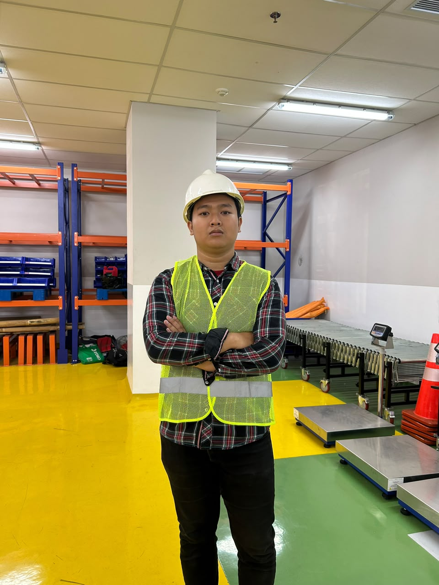

Nama saya Gilba Gigi Widian
Saya berusia 20 tahun lahir di Bandung, Pada tanggal 5 Juni 2006.
Saat ini, saya merupakan mahasiswa Teknik Logistik semester 5 di Universitas Pendidikan Indonesia.
Kunjungi GitHub Saya